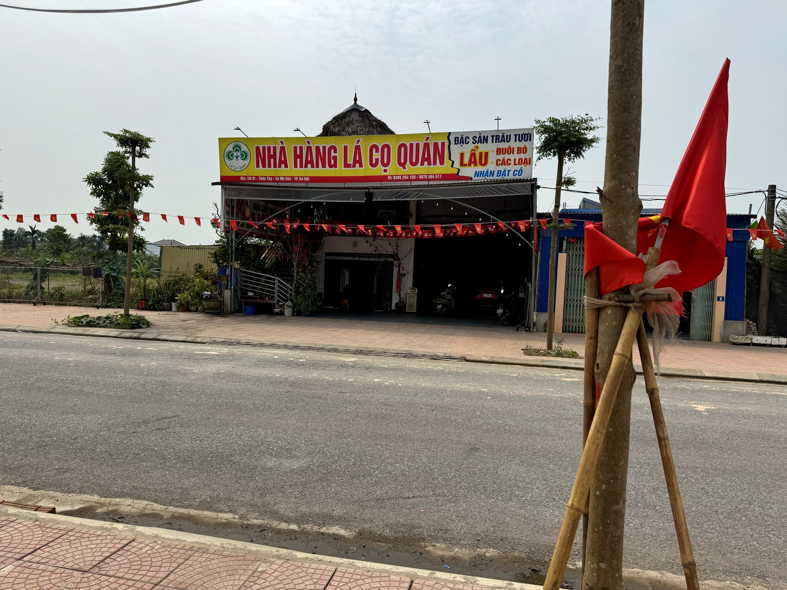

Mường Cốc — Một ngày, vạn trải nghiệm (Phương án B: Văn hoá sen & Lễ Mo Mường)Muong Coc — One Day, Countless Experiences (Option B: Lotus Culture & the Mo Muong Ritual)Muong Coc — One Day, Countless Experiences (Option B: Lotus Culture & the Mo Muong Ritual)
Mường Cốc — Một ngày, vạn trải nghiệm — Phương án B mang đến một ngày đậm chất văn hoá sen và di sản tinh thần người Mường. Bạn bắt đầu từ chùa cổ và đền thiêng, lướt bè tre trên hồ Baibóo, ngồi bên mâm Cỗ Lá Mường. Buổi chiều, bạn dự lễ Mo Mường tại ngôi đình cổ — nghe những lời mo ngân lên trong không gian thiêng — rồi khép lại tại đầm sen thơm ngát và nhà Niệm Nga, nơi bạn tự tay ướp trà sen mang về làm quà.
Muong Coc — One Day, Countless Experiences (Option B) offers a day steeped in lotus culture and the spiritual heritage of the Muong people. You begin at an ancient pagoda and a sacred temple, glide on a bamboo raft across Baiboo Lake, and sit before a Co La Muong feast. In the afternoon, you attend a Mo Muong ritual at the old communal house — hearing the chants rise through the sacred space — then close at a fragrant lotus marsh and the Niem Nga family's home, where you scent lotus tea by hand to take home as a gift.
Muong Coc — One Day, Countless Experiences (Option B) offers a day steeped in lotus culture and the spiritual heritage of the Muong people. You begin at an ancient pagoda and a sacred temple, glide on a bamboo raft across Baiboo Lake, and sit before a Co La Muong feast. In the afternoon, you attend a Mo Muong ritual at the old communal house — hearing the chants rise through the sacred space — then close at a fragrant lotus marsh and the Niem Nga family's home, where you scent lotus tea by hand to take home as a gift.
5 lý doreasonsreasons
Hành trình The The trong ngàyjourneyjourney
Những điểm Places you'll Places you'll bạn sẽ quadiscoverdiscover


Bao gồm Included Included & không& not& not
Đã bao gồmIncludedIncluded
- Phương tiện di chuyển nội vùng và mũ bảo hiểmIn-region transport and helmetIn-region transport and helmet
- Hướng dẫn viên bản địa am hiểu văn hoá MườngLocal guide well-versed in Muong cultureLocal guide well-versed in Muong culture
- Vé tham quan và các hoạt động trải nghiệm theo chương trìnhEntrance fees and all experience activities in the programmeEntrance fees and all experience activities in the programme
- Bữa trưa cỗ Mường + giao lưu văn nghệ cộng đồngMuong feast lunch + a community performance exchangeMuong feast lunch + a community performance exchange
- Trải nghiệm đầm sen + workshop làm trà sen tại nhà Niệm NgaThe lotus-marsh experience + a lotus-tea workshop at the Niem Nga homeThe lotus-marsh experience + a lotus-tea workshop at the Niem Nga home
- Nước uống và khăn lạnh trong suốt hành trìnhDrinking water and cool towels throughout the journeyDrinking water and cool towels throughout the journey
- Bảo hiểm du lịch trọn góiComprehensive travel insuranceComprehensive travel insurance
- Quà lưu niệm cộng đồng cuối hành trìnhA community-made souvenir at the end of the journeyA community-made souvenir at the end of the journey
Không bao gồmNot includedNot included
- Ăn sáng, ăn tối và đồ uống ngoài chương trìnhBreakfast, dinner, and beverages outside the programmeBreakfast, dinner, and beverages outside the programme
- Đồ uống trong bữa ănBeverages during mealsBeverages during meals
- Lễ Mo Mường tại Đình Phú Cốc — phụ thu, đặt trước tối thiểu 5 ngàyThe Mo Muong ritual at Phu Coc Communal House — surcharge, book at least 5 days aheadThe Mo Muong ritual at Phu Coc Communal House — surcharge, book at least 5 days ahead
- Đưa đón Hà Nội ↔ Mường Cốc (báo giá riêng theo yêu cầu)Hanoi ↔ Muong Coc transfers (quoted separately on request)Hanoi ↔ Muong Coc transfers (quoted separately on request)
- Tiền tip cho hướng dẫn viên và lái xe địa phương (nếu có — gợi ý)Tips for the guide and local drivers (optional — suggested)Tips for the guide and local drivers (optional — suggested)